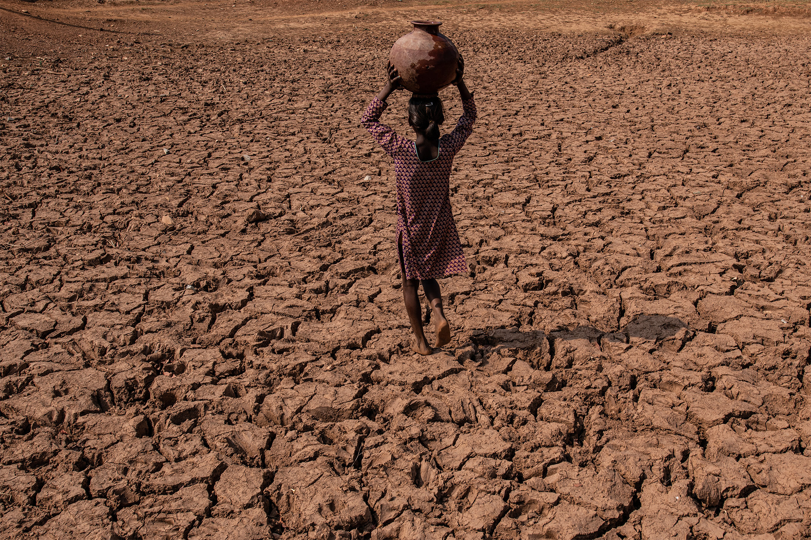
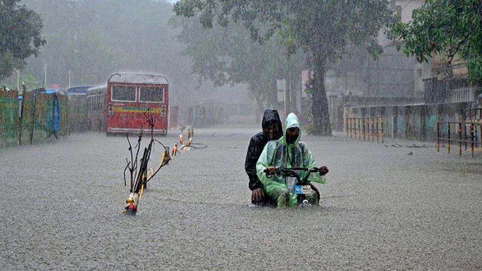

A disaster that occurred in India is a sudden and catastrophic event that has caused significant damage, loss of life, and disruption to communities in India. This could include natural disasters such as floods, earthquakes, and cyclones, or man-made disasters such as building collapses or industrial accidents. The impact of these disasters can be devastating and require immediate response and recovery efforts to help affected communities.
Poverty in India is a complex and multifaceted issue that has long been a challenge for the country. While the Indian economy has grown rapidly in recent years, poverty remains a significant problem for a large portion of the population.
One of the main causes of poverty in India is income inequality. Despite economic growth, the benefits of this growth have not been distributed equally across the population. A small percentage of the population, primarily in urban areas, have benefited greatly from economic growth, while many others continue to struggle with poverty.
Another factor contributing to poverty in India is the lack of access to education and job opportunities. Without access to education and training, many people in India are unable to secure well-paying jobs and are forced to work in low-wage, informal jobs.
Inadequate healthcare and sanitation facilities also contribute to poverty in India. Poor health can lead to missed work and lost income, while a lack of access to clean water and sanitation can lead to a higher incidence of illness and disease.
Many of India's poor live in rural areas, where access to basic services and infrastructure is often lacking. Lack of access to electricity, transportation, and telecommunications can limit economic opportunities and hinder the delivery of essential services.
In recent years, the Indian government has implemented various initiatives aimed at reducing poverty, including social welfare programs, employment schemes, and initiatives to improve access to education and healthcare. However, poverty remains a complex and challenging issue that requires sustained efforts to address.